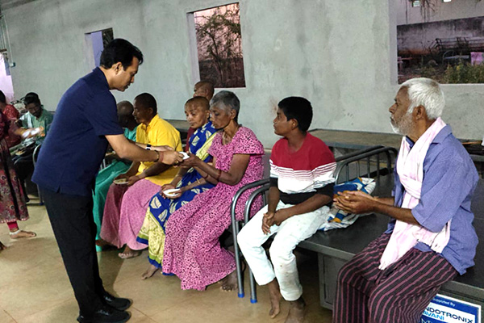

Events & Field Updates

Project Parivarthan: Setting the Tone for 2026
Expanded across 4 districts — Kurnool, Nandyal, Kadapa, and Annamayya — reaching 104 institutions and over 3,000 young adults with structured mental health awareness workshops. Screen addiction, peer pressure, emotional resilience: conversations India's classrooms rarely have, delivered by professionals who show up in person.
See the full Parivarthan story →
Commitment to Youth Well-Being
In a single season, Nigama Foundation reached 16 schools, junior colleges, and welfare hostels across Kurnool and Nandyal, bringing 3,500+ young men and women face-to-face with a counselor — many for the first time. This was Parivarthan's proof-of-concept, and it worked.
Read the full report →
Blood Donation Camp 2025
The Indotronix Avani team in Hyderabad came together for a volunteer blood donation drive — a morning of compassion, community, and collective impact. The people who fund the mission also show up for it.
Read more →
Dining Hall Renovation — Visakha Model School for the Blind
Commissioned on August 8th, 2024, the dining hall renovation at VMS gave blind-school students a dignified space to share meals. This is what Indotronix Avani Group's CSR commitment looks like when it arrives in person — not a plaque on a wall, but a room where children eat every day.
About our Care programs →
School Supplies Distribution — Amitabha Aadarana
Uniforms, notebooks, bags, and stationery distributed to students who would otherwise start the year without basics. Fifty children sponsored annually through the Nigama school-supply programme — each one named, each one tracked, each one followed through to the end of the year.
About our Education programs →
Delivering Respect — Sadhana Institute
Appliances, assistive resources, and sustained support for the Sadhana Institute for the Intellectually Challenged. Respect isn't sympathy from a distance — it's equipment delivered, a visit made, a hand shaken. The barrier for most people with disabilities is access, not ability. We address the barrier.
About our Respect programs →